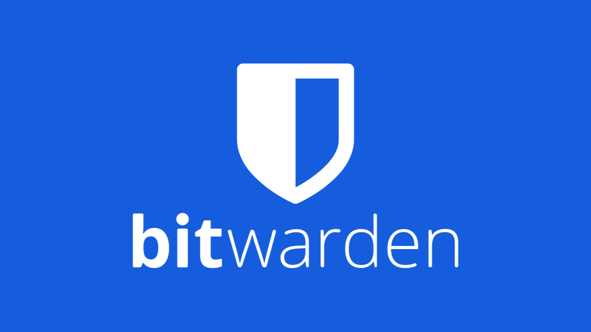
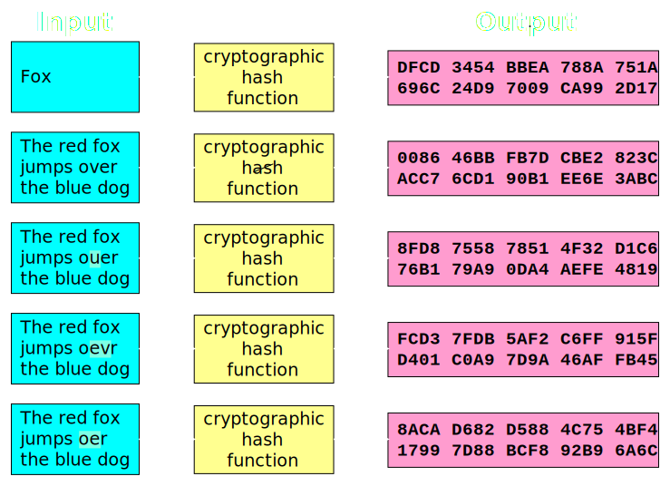

Passwords: Managers, Creation
Contents
Passwords Are Terrible
What was mine again...? Was it with a "0", or an "o?"
There are two types of people in this world: those who have forgotten their password and liars. Perhaps you've been locked out of some app after entering a failed login too many times, or maybe you've written your password onto a piece of paper, just so you can remember it.

In any case, the problem is clear: no one can remember their passwords. And that leads to both inconvenience on the part of users and incredible insecurity.
As you can imagine, keeping your password in a sticky note by your desk maintains your access to it, but also annihilates a key security element. Some 2 out of 5 Americans do just this, in fact. And yet following the onerous demands made by Twitter/Facebook/whatever on your new passwords (e.g. you need a mixture of letters or numbers, or you need at least one special character) leaves them mangled, cryptic, and impossible to remember.
If only there was some way to come up with hard-to-crack passwords on the fly as well as recall them whenever necessary... Wait, what about password managers?
A Better Way
It turns out that password managers can both give you (robust, randomly-generated) passwords and securely store them. 73%. of cybersecurity experts use them, so why shouldn't we? Personally, I use one myself, where it manages over 180 of my passwords.
Still, you could reasonably be concerned with the security of these password managers. If my passwords are being stored on a server somewhere, what happens if that server gets hacked? Can the developers of my password manager see (and steal) all of my passwords? Can a hacker steal my password as it's sent to the server?
With industry-standard communication protocols and the clever use of military-grade encryption algorithms, all leading password managers provide solutions to these issues.
Are Password Managers Secure?
First, servers only ever access encrypted versions of your passswords, so they can't be accessed in a data breach. If a malicious hacker or (more likely) a shifty employee steals passwords from the company's database, they won't be able to use any of them, since they'll only have encrypted versions of the passwords.
How is this possible, you ask? The password manager's client program, which is often a browser extension or desktop application, uses your master password (and some other cryptographic data) to create a unique master key. Then, when you add new passwords into your manager, the client encrypts them into a secure form before sending them to the server. When you access your passwords again, the client uses the master key to decrypt your password, so that you can log in as necessary.
More specifically, this is how Lastpass and Bitwarden, two of the most popular separate password managers available, secure their passwords on the server-side. They use AES 256-bit to encrypt passwords, an algorithm that was pioneered by the Department of Defense and which is used broadly in the private sector. Most independent password managers use similar schemes to avoid giving the developers or malicious parties usable access to anyone's passwords.
Browsers like Chrome also have their own built-in password managers. If you're signed in with a Google account and store your passwords in Chrome, then a similar series of steps will protect them from prying eyes. Firefox and Safari have similar protections in place.
What About My Master Password?
As we've seen, your passwords are securely encrypted with a master key (based on your master password). But if you have to log in to your password manager, wouldn't the servers involved necessarily need to know your master password? And in that case, won't developers still have the ability to decrypt your passwords?
This is a reasonable thought. Fortunately, the developers for all the major password managers don't have this highly jeopardizing ability. Why? Servers don't have access to your master password, instead authenticating with something called a hash.
Before logging in to your password manager, your client program (often a browser extension or desktop application) applies a one-way cryptographic algorithm (known as a hash function) to your password before sending it to the server. Essentially, this hash function takes your password and transforms it into some unique, irreversible data, leaving it effectively impossible to transform that unique data back into the original password.
Rather than storing your master password itself, servers store a hashed version of the password. And when you log in, your client sends a hashed form of the password to the server, which then checks the two hashed values with each other. Since hashes are in effect irreversible, the hash values can't be reversed to access the password. This way, you can securely authenticate without the server storing your master password itself. And neither the developers nor any possible malicious party can decrypt your passwords.
Choosing A Password Manager
| Bitwarden | LastPass | Dashlane | Chrome's Built-in | |
|---|---|---|---|---|
| Free unlimited passwords |  | 50 | ||
| Free Device Syncing | 1 Device | 1 Device | ||
| Cross-Browser Compatibility | Only Chrome | |||
| Open Source | Proprietary | Proprietary | Proprietary |
As you can see, Bitwarden has the best features for free: unlimited passwords stored, syncing across all of your devices, and compatibility with all major browsers.
You can chip in a low monthly rate if you want more advanced features (like encrypted file attachments), but the free features are easily enough to replace whatever password memorization scheme you're using.
Bitwarden also has the added benefit of being open source, which means that you (and external cybersecurity experts) can look at the code for the programs that it uses, ensuring that they're trustworthy and using robust protocols and encryption algorithms.
If you just want to escape password hell, you browser's built-in password manager is worth trying. And if you're keen on keeping costs low, you can use Bitwarden. But overall, these password managers all perfectly capable of replacing your memorized passwords safely and securely, even Google Chrome's built-in one.
Making A Good (Master) Password

So password managers are both more secure and more convenient than trying to keep dozens of passwords in your head. Great. But they still require a master password, right?
Quick and Easy: Make A Good Password
A simple way to make a strong, memorable password is to use a passphrase. Take a sequence of words and characters that have specific meaning to you, and you can create a password which is long enough to be secure and personalized enough to remember.
Lastpass offers examples like these:
- myvacationtoparis-wasincredible
- mydog’sbirthdayisNineteenthofNovember
- soexcitedtoStartCollege!thisfall
Passwords like these are difficult to brute force due to their length, resist dictionary attacks thanks to their variety, and, with sophisticated encryption like the aforementioned AES 256, become incredibly difficult to decrypt into a usable form.
What Makes A Password Secure?
As you already saw, length and word variety are two of the most important factors when you create a password.
To get a better feel of what makes a password secure or insecure, try choosing from the following passwords.
Try selecting the password you think is most secure.
As you can tell, the characteristics of a good password can be a little counterintuitive, but they're vital to protecting key login information. For example, as with the little password quiz above, "ieatkale88" requires about 1 billion more guesses to crack than "iloveyou88," due to the prevalent use of "iloveyou" in passwords. You may have realized that eating kale is far less common than falling in love, but it's not obvious that there's such a massive security gap between the two.
Researchers estimate that passwords need to withstand 1 million or more guesses to be reasonably secure from online guessing attacks, so the difference between "iloveyou88" and "ieatkale88" can mean the difference between secure authentication and cracked password.
Of course, using a longer and more varied passphrase (as we saw earlier), is much more secure than even "ieatkale88."